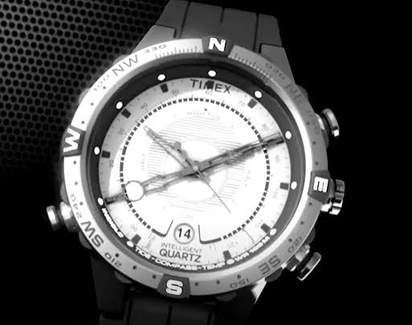
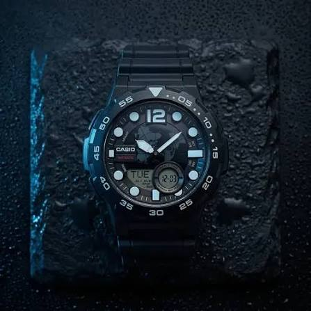
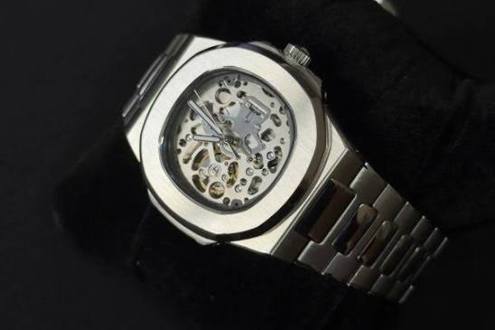

Es el reloj clásico que indica la hora con manecillas (horas, minutos y, a veces, segundos) que giran sobre una esfera con números o marcas. Es símbolo de elegancia y tradición.



| Tipo | Cómo funciona | Precisión | Mantenimiento |
|---|---|---|---|
| Cuarzo | Funciona con una pila y un cristal de cuarzo que vibra | Muy alta | Cambiar la pila |
| Mecánico | Se le da cuerda a mano con la corona | Media | Cuerda diaria y revisión periódica |
| Automático | Se carga solo con el movimiento de la muñeca | Media-alta | Revisión cada varios años |